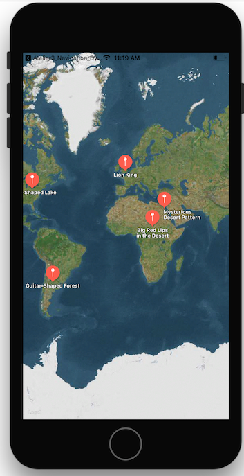
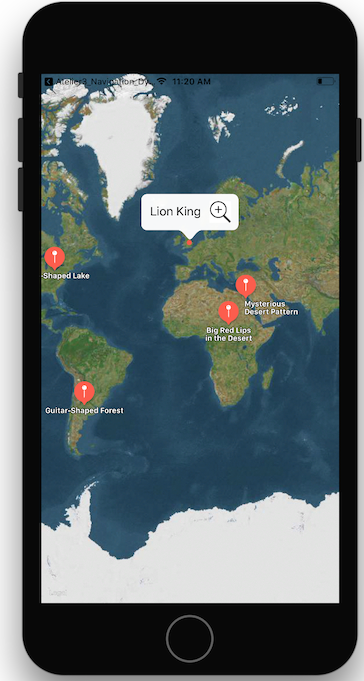

MapView
Introduction
Dans cet atelier nous allons faire une application qui permet de voir des endroits marrants repérés depuis Google Earth.
Cela nous permettra de travailler sur les MapView, les annotations et les déplacements sur la carte.
Notions nécessaires : fonctions importantes de MKMapViewDelegate, différences entre MKAnnotation et MKAnnotationView, MKCoordinateRegion
Exercice 1- Première carte avec des points
Dans ce première exercice, nous allons placer quelques points rigolos repérés sur Google Earth (données tirées de http://twistedsifter.com/2014/02/50-amazing-finds-on-google-earth/)

- Créez un nouveau projet Atelier8_MapView
- Récupérez le fichier AmazingPlaces.plist et le fichier FunMapPoint.swift pour parser ce plist
- Ajoutez une vue MapView à l'écran principale et créez un outlet sur la MapView
- Créez une classe FunAnnotation. Cette classe doit :
1. avoir un initializer de type `required init(mapPoint: FunMapPoint)` 2. implémenter le protocole `MKAnnotation` (et donc dériver de `NSObject`) - Pour chaque point de votre liste, ajoutez une annotation à la carte (
mapview.addAnnotation) - Réglez ViewController comme le delegate de la MapView
- Implémentez le protocole
MKMapViewDelegate. Notamment la fonctionmapView(_ mapView: MKMapView, viewFor annotation: MKAnnotation) -> MKAnnotationView?qui doit renvoyer uneMKMarkerAnnotationViewcorrectement remplis
Exercice 2- Click sur les points d'interêt
Au click sur les points, nous allons zoomer pour que l'utilisateur voit instantanément le point d'interêt au bon niveau de zoom.
- Autorisez l'affichage d'un callout au
MKMarkerAnnotationViewque vous renvoyez (canShowCallout = true) - Ajouter un
rightCalloutAccessoryViewà votre AnnotationView qui serait un bouton avec une icône de loupe par exemple. Note : pensez à régler la frame du bouton sinon il aura une taille de zéro par défaut - Implémentez la fonction
mapView(_ mapView: MKMapView, annotationView view: MKAnnotationView, calloutAccessoryControlTapped control: UIControl)pour être prévenu quand l'utilisateur clique sur votre bouton - Au click sur le callout, changez la région visible en centrant sur l'annotation avec le bon niveau de zoom (voir
MKCoordinateRegionetmapView.setRegion)
{kind=link}

Exercice bonus - Bouton dezoom
Quand l'utilisateur a zoomé sur un point il est fastidieux de revenir à la vue globale. Nous allons ajouter un bouton pour cela.
- Ajoutez un bouton "unzoom" à votre interface
- À l'affichage de l'écran centrez la carte sur le point (0,0) et mettez le niveau de zoom à 160 en lattitude, 180 en longitude
- Branchez le bouton Unzoom sur une action qui centre la carte sur le point initial
- Cachez le bouton quand le niveau de zoom est inférieur au zoom initial. Pour savoir quand le niveau de zoom change, implémentez la fonction
mapView(_ mapView: MKMapView, regionDidChangeAnimated animated: Bool)